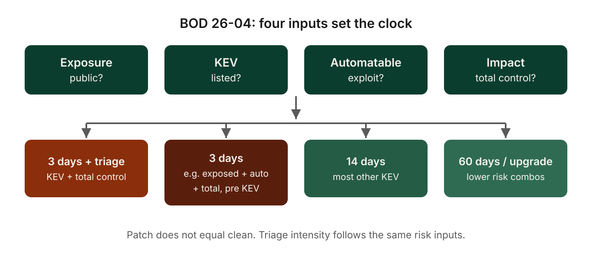

CISA BOD 26-04: Risk-Based Patch Clocks, Then Prove You Were Not Owned
When CISA put Ivanti Connect Secure CVE-2026-111357 on KEV on 30 October, the entry came with a three day due date and a forensic triage flag. PHP2Shell got a three day clock on 26 October. Both clocks come from Binding Operational Directive 26-04. It is a federal mandate. It is also one of the cleaner vulnerability prioritization writeups CISA has published in years. Non federal defenders should lift the decision model even if the compliance deadlines are not yours.

Issued 10 June 2026, BOD 26-04 revokes and replaces BOD 19-02 (internet accessible systems) and BOD 22-01, the 2021 directive that created the KEV catalog (SecurityWeek, Tenable). The catalog stays. The flat KEV deadline does not. It tells Federal Civilian Executive Branch agencies to stop treating every CVE like equal homework. Urgency hinges on four variables:
- Asset exposure: is it publicly exposed?
- KEV status: is the CVE in CISA’s Known Exploited Vulnerabilities catalog?
- Exploit automation: can an adversary automate the exploit steps?
- Technical impact: partial control or total control after exploitation?
CISA’s accompanying news release is blunt about two modern pressures: AI may shrink the time between patch and exploit, and applying a patch generally does not evict an actor who already got in. That second sentence should be taped above every vuln management standup.
The clocks
The four variables combine into tiers. As Tenable summarizes them:
- 3 days plus forensic triage: in KEV and yields total control. Exposure and automation do not change this tier.
- 3 days: other high risk combinations, for example publicly exposed, automatable and total control, even before a KEV listing.
- 14 days: most other KEV entries and several high risk non KEV combinations.
- 60 days: lower risk combinations, for example not exposed, automatable, partial control.
- Fix on upgrade: meets none of the four criteria.
The full 16 combination matrix is Table 1 in Appendix A of the directive. Read it there before you encode it in policy. Agencies had 60 days to move their processes to the tiered model and 180 days, so roughly December 2026, to meet the full timelines.
Why this matters outside government
Most enterprise backlog fights are still CVSS theater plus whoever yelled last. BOD 26-04 formalizes a better queue:
- Internet exposed + known exploited + total control should burn the calendar.
- Internal only + not exploited + limited impact can wait for a planned upgrade window.
- The catalog still matters, but context around exposure and impact changes the clock.
You can implement that without CDM dashboards or FedRAMP paperwork. You need asset exposure tags, a KEV feed, and an agreed definition of “total control” for your environment.
Forensic triage is part of remediation
The implementation guidance walks agencies through scoped triage when a KEV lands hard:
- Scope quickly after the KEV addition
- Preserve volatile evidence before you blindly remediate
- Patch after collection when possible
- Contain without theatrical moves that tip the actor if you can avoid it
- Decide whether to escalate based on triage findings
Private sector IR teams already know this sequence. Vulnerability management teams often skip it because the metric is “percent patched,” not “percent verified not compromised.” BOD 26-04 pushes those functions back together for the worst class of bugs.
If your process is “scanner finds KEV, change ticket patches, ticket closes,” you are optimizing the wrong scoreboard.
A practical private sector adaptation
Data you need
- Public exposure flag per asset (internet, partner, internal)
- Product and version inventory good enough to match KEV entries
- Owner and patch window metadata
- Logging sufficient for triage on high value assets
Decision rule of thumb
- KEV + total control, exposed or not: three day clock with triage, mirroring the directive’s top tier. Preauthorize the emergency change so the clock is spent fixing, not approving.
- KEV with partial control: the 14 day tier for most combinations. Still urgent; sequence by crown jewel adjacency
- Not KEV + public + automatable total control: still high, watch EPSS and exploit intel, do not sleep
- Meets none of the four criteria: fix on upgrade. Track it, do not pretend it is a SEV 1
Operating cadence
- Subscribe to KEV updates
- Daily KEV diff reviewed by a human, not only a silent automation
- Preauthorized emergency change path for edge KEVs
- Named triage owner for internet exposed KEV hits
Detection and process controls to add this quarter
- Alert when a newly added KEV matches an internet tagged asset
- Require a triage note before closing KEV tickets on internet facing systems
- Store pre patch evidence links (log bundles, memory capture where justified) in the ticket
- Measure mean time from KEV publication to exposure confirmed, not only to patch installed
- Run a tabletop: “KEV drops at 4pm Friday for our VPN product”
What BOD 26-04 is not
It is not permission to ignore everything outside KEV. The directive still has agencies build their processes on CVE and KEV data broadly, not just the catalog (summary). For enterprises, KEV is a prioritization accelerator, not a complete vulnerability program.
It is also not a reason to collect forensic images for every medium CVE on a printer. Triage intensity should follow the same risk variables as the patch clock.
Leadership summary
BOD 26-04 replaces older federal patch directives with risk based timelines driven by exposure, KEV status, automatable exploitation, and technical impact. It also expects compromise checks because patches do not remove established access. We should adopt the same queue logic and attach triage to internet exposed KEV responses.
Example ticket fields worth mandating
For internet exposed KEV items, require:
- Exposure confirmation timestamp
- Evidence preserved (yes/no and link)
- Patch or isolation timestamp
- Triage conclusion: no evidence / suspicious / confirmed compromise
- Secret rotation performed (yes/no/not applicable)
If those fields are empty, the ticket is not done. Metrics people can still count patches. IR people get the record they need when the same CVE shows up in threat intel two weeks later.
Checklist
- Tag assets for internet exposure
- Wire KEV feed into vuln and IR tooling
- Define emergency patch path for public KEV + total control cases
- Require triage notes before closing those tickets
- Track time to exposure confirmation and time to verified remediation
- Align vuln management SLAs to risk classes instead of one flat CVSS cutoff
Federal directives are not scripture for private networks. This one is a usable playbook. Steal it.
Sources
- CISA: BOD 26-04, prioritizing security updates based on risk
- CISA: BOD 26-04 implementation guidance
- CISA: news release on the new directive
- Tenable: CISA BOD 26-04 FAQ
- SecurityWeek: CISA directs federal agencies to prioritize security patches based on risk
- Paubox: CISA orders agencies to patch the most dangerous flaws within three days